Resan till Tbilisi
Inledning
Europas gränser kommer upp igen och jag tar en konversation med Samantha (Efter “Her” med Joaquin Phoenix), “Kontinenter är inte naturens verk utan ett Excel-ark som spårade ut för 2000 år sedan”. Jag älskar ChatGPT. Långt ifrån felfritt men en bra början på att ta reda på saker, guld vad gäller datorpyssel. Med Airpod i och muntligt läge blir det så lätt med följdfrågor … går jag över styr? Nejdå, jag kan sluta när jag vill! … bara en fråga till …
så frågan är “Mu”, en kossas åsikt, ingen bryr sig, Joey missuppfattat “Moot”, blev roligare så tycker jag. Mu.
maten
rysk oligark
grabb från Tallin vilse
Mint? Brake?
Bubbla
Luftskott växer fast
Del 01
Jag tänder läslampan åt den lilla damen bredvid mig, för hon når inte upp till knappen.
Det är ändå rätt billigt att flyga, konstigt nog, men det märks. Lufthansa minns jag som hög standard, nu sitter jag i något som påminner om en SL buss från förr. Fasta armstöd, fast ryggstöd, brickan får knappt plats framför mig. 2h till München och runt 4 till Tbilisi får jag väl tåla. “Entschuldigung” från en man med fyra guldränder på kavajärmarna, börja ana oråd. Vi väntar på Arlanda F37, nåt är trasigt och tekniker är på väg. Min timme i anslutning krymper så när folk sätter sig på fel plats och startar rockader, eller blockar hela flödet vid boarding med att böka av sig jacka och pyssla i handbagaget, Ååå så svårt att inte ryta till.
Men, fan tro’t, efter 30 min är han tillbaka med “Good News”! Han gasar på och kör in nästan hela förseningen, fast vi hamnar på en annan terminal, K4 och jag ska till L5. Det går bra. Men flygplatser och avstånd. Det är ju ett geografiskt faktum att plan och ramper har stora avstånd. Små tåg som kör runt, skansentåg, vore mysigt.
Ett barn hostar, och hostar, oavbrutet hela resan, gråter ibland. Vad kan jag säga, ingenting, skönt att det inte är mitt barn, det är som det är och det är mest synd om ungen.
Ser henne med familjen i kön till passkontrollen, pappan har ett konstigt handbagage, som en liten plastgris i koppel. Som barnet kan åka på! Smart! Men hon är trött och ledsen, en klok polis hämtar ut dem ur kön och låter dem gå före, fint.
Lilla damen håller upp en hand med tummen infälld under fingrarna, “håller tummarna för att du hinner med ditt plan”.
Landningen i Tbilisi är crossbana, hoppar o skakar, nyfiket följer jag motorernas varvtal och ljudet från slatsen när de skjuts ut och efter en stadig nedsättning och lite krängningar taxar vi in.
Flygplatser. Så bekant, glasväggar, synliga balkar, bilfiler utanför med skyltar och målning på marken som visar vem och vad som får köra var. Bussar, parkering, polisbil. Den stökiga landningen var försmaken, det blåser, som satan. Gömd bakom nån korvkiosk försöker jag komma åt wiffit som ska finnas, det blir surfpaket från Comviq istället. “You’re not in Kansas anymore” tänker jag, nu är jag utanför EU, mellan Europa och Asien beroende på definition. Är gränsen Bosporen, eller Kaukasusbergen. Gör de referenser både till Alice i underlandet och Trollkarlen från OZ i Matrix, ja minsann!
Klart att taxin luktar inrökt, förväntade mig inget annat. Motorväg, stadskärna, gränder upp, upp, smalt. Han stannar och går före genom prången, må jag hitta ut igen, må knäna hålla för alla trappor. Husen hänger lite tveksamt kvar på bergssluttningen. Slutligen en knarrig trätrapp som svänger ut över en avgrund fram till dörren. Höjder är inte min grej. Han säger “Bye” och är borta. Den kalla luften i lägenheten slår emot mig, börjar utforska, hitta lampknappar, hitta rum, dörrarna är mörka och syns knappt. Ok, ingen värme. Den kalla vinden viner rakt genom bostaden. Men magnifik utsikt. Inget varmvatten … Hittar varmvattenberedaren, där luktar det gas. Det är spännande att resa :-)
Kryper ner i sängen med kläder och mössa på.
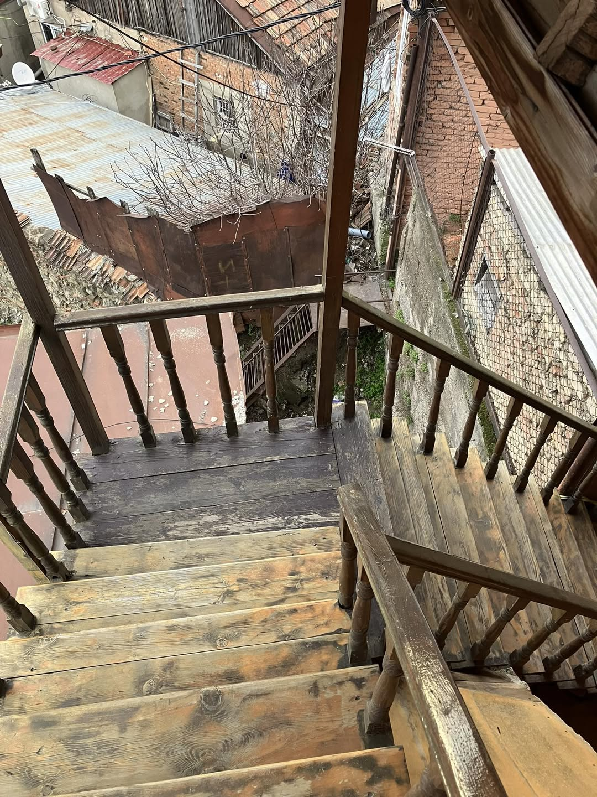
Del 02
Somligt är bekant, sig likt. Unga vuxna som pratar och skrattar står utanför krogar och röker. Genom fönstret ser jag par som äter, de ser inte så glada ut, de kollar telefoner.
Annat är mer olikt. Den här stadsdelen verkar ha vuxit fram som … ett korallrev, ingen river det gamla utan nya bostäder byggs lager på lager av gamla hus. Tveksamma balkkonstruktioner blandat med trähus, betong, tegel. Elkablar kors och tvärs, limmade vattenrör och gasledningar genom bråten!!
Träkojan på 90 m² som jag bor i knakar och skakar i vinden, 22 i byarna idag. Tanken slår mig att det är såna här områden vi ser på löpen “…hoppas på att hitta fler överlevande under rasmassorna …”.
En man bankade på och väckte mig där jag sov med mössa på. Han kickade igång gasvärmen så jag fick en varmdusch och när det mojnat även varmt inomhus. Elementen är skållheta.
Hm. Mat, cash? Vågar mig ut på en tveksam Bambi-promenad, vänder mig om varannan meter för att se så jag hittar tillbaka, kan inte lita på gps för internet verkar ha blåst sönder. En gata halvvägs ner, sen tillbaka. Trampar i hundskit i stort sett direkt, så där retligt, såg nåt misstänkt i ögonvrån, vänder mig om och, jovisst, ett fotavtryck i skiten.
Lite oklart vad som är privat, hotell, affärer. Gamla skyltar lockar till caféer som är sen länge stängda. Små trånga butiker med huvudsakligen chips och sprit, lyckas växla några dollar till Lari så jag inte måste vifta med kort eller ApplePay i småbutikerna. Mitt i stan ligger små iglosar av tegel, bad i svavelrika källor, tydligen skälet till att staden grundades här. Det luktar gamla ägg. Jag ska tydligen pröva det, … säger dom.
Med nån korv i handen blir gatuhundarna lite för nyfikna, sätter i mig resten snabbt. Rabies är ett av de få vaccin jag inte har, lågrisk, men jag gullar inte med gatuhundar. Även katter håller jag lite kort sen en, till en början gullig spinnande kompis satte tänderna djupt i handen utan förvarning, det var mars 2020, i Thailand, dan innan jag skulle flyga hem genom massa temp-kontroller så avböjde rabiessprutor, det gick ju bra ändå :)
Uppförsbacke hem igen. Sa guiden att vi skulle gå långt i morgon? Nejje. Gå lite! Lagom. Min vän landade 30 mil bort pga vinden. Som att boka lunch i Stockholm och bli avsläppt i Karlstad, “Du, jag blir 3,5h sen, kommer med buss”. Så jag bekantar mig med TVn och lyckas klicka mig fram mellan rutor med rysk text. Ger upp, värdelöst utan Internet ändå.
Föresten är gatuhundarna välskötta, har ägare och är öronmärkta och kastrerade, rätt stora raser, typ leonberger och sånt, så nog inte så farligt trots allt. Men jag rör dem inte ändå.
Georgiska alfabetet, mjuk och fin text, de latinska och kyrilliska ser lite kantiga ut jämfört med Georgiska. Med spår från 300 CE, … ok, jag har forskat på det som det heter nu mera, dvs googlat ålder, eller vad man nu tror och menar, äldst till yngst; feniciska, hebreiska, grekiska, latin, arabiska, georgiska, kyrilliska.
Inte så långt, sa hon, guiden. 16630 steg. “Du har gått mer än du vanligtvis har gjort …” kommenterar iPhone, no shit …
Hon var bra och trevlig, fast min hjärna är lite för liten för all information men kortfattat låter det som alla andra städer; konflikt, de lurade och slog ihjäl varandra i familjen, låste in sin fru, anföll grannlandet, ockuperades av än den ene än den andre, staden brändes ner, hungersnöd, massa kyrkor (men klart de bygger en till), bråk om vem som håller på rätt Gud, Armeniska-, Georgiska- ortodoxa, Zoroaster, Perser, Östrom, Judar … Mycket bilder i kyrkorna, dom gillar visst det. Själv är jag lättad av att inte fatta eld inne i nån av dem, gudlös som jag är.
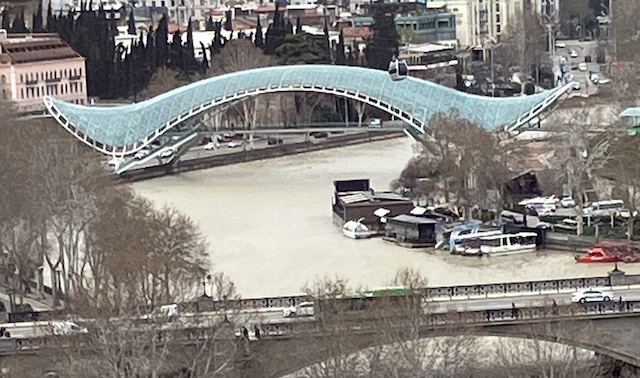
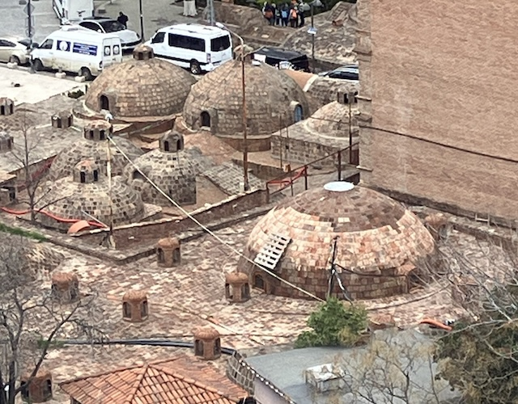
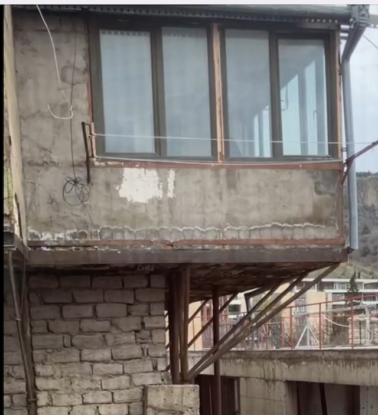
Del 03
03
“Gud har skapat världen slät, men ser att himlavalvet inte täcker marken. Djävulen föreslår att Gud ju kan trycka ihop marken så den passar. Bra idé tycker Gud och klämmer ihop världen. Himlen täcker världen men marken krackelerar, det blir berg och dalar, floder och hav.”
/Kaukasisk folktro
Och geologin ÄR dramatisk, och vacker tycker jag, när jag ser Kaukasus snöklädda toppar norrut. . och gränsen för vart jag borde åka enligt UD. Norrut, nej. Söderut, nej. En liten strimma av fred mellan två krig.
Alternativ myt: Sedimentär lera, kalk och sand från några tio-tal miljoner år sedan, lagras på botten av resterna av Tethyshavet (I dag Svarta havet/Kaspiska havet). Arabiska plattan trycks mot Eurasien med ett par cm/år och Kaukasus reser sig med geotermiska källor, lervulkaner och någon vilande stratovulkan.
Vi har tittat på många kyrkor, med klotter på väggarna som efter en viss tid blir OK. Inte om det är från i går men när det är 1000 år sedan blir det intressant. Som nordiska väringars runklotter i Hagia Sofia. Kyrkor är som tidskapslar, få förändringar, historien ligger blottad, olikfärgade stenar som byggnadsmaterial, olika kulturer har satt spår. Andra tidskapslar ligger under jord, där vi inte grävt fram lämningar ännu, eller under vatten där vi anlagt dammar eller marken sjunkit/vattnet stigit. Texter, myter … i nåt liv ska jag vara historiker eller arkeolog.
Nytt boende, väldigt centralt utan uppförsbackar. Litet, rent, wiffi, kök, känns bra. Nackdelen med centralt är väl att det är dyrare häromkring. Balkonger är viktiga. Traditionellt mötesplats. Lägenheter är ofta generationsboende och livet utspelar sig på balkongerna. På egen hand nu men lyckas hitta tillbaka till en skylt om bokhandel/cinema. Café Novel. Coolt och mysigt, små rum och prång, böcker överallt, ett rum med sällskapsspel och ett större bord, enkel mat, liten biosalong med träbänkar och kuddar. En vinylspelare och skivor, Fridas “Something going on” på väggen. Tjejen som jobbar ringer nån för att be om hjälp att göra en GT, som innehåller en shot persika! Äldre väljer mellan Engelska eller ryska, de unga pratar mycket bra engelska och ingen ryska. “De har väl lärt sig men använder det aldrig” även om det finns en rätt stor rysk grupp här.
Ryssarna är lite som de där från USA som har pass och kommer till Europa, ber om ursäkt eller kallar sig kanadensare. De vill ju inte ha krig o elände. De jobbar online, vanliga gulliga människor “Vad ska vi göra, klicka fel på fb och man kan bli hämtad”. Plötsligt tänker jag att som vi tar emot Ukrainare finns det ryska flyktingar också, även de offer. Så svårt att närma sig, och känsligt. Inte känsligt som på ytan, utan känsligt som förstörda liv, anhöriga döda-känsligt. Ångest sorg och gråt ligger nära ytan.
Nu ska jag kolla om det finns karaoke på byn.
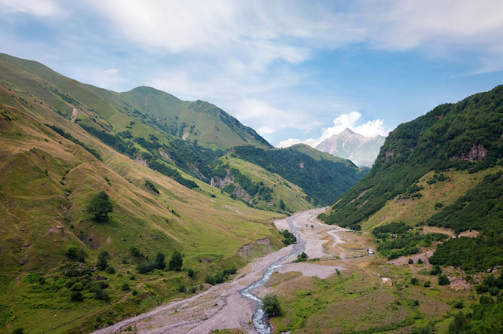
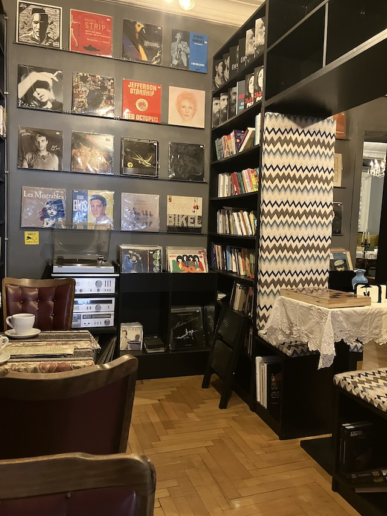
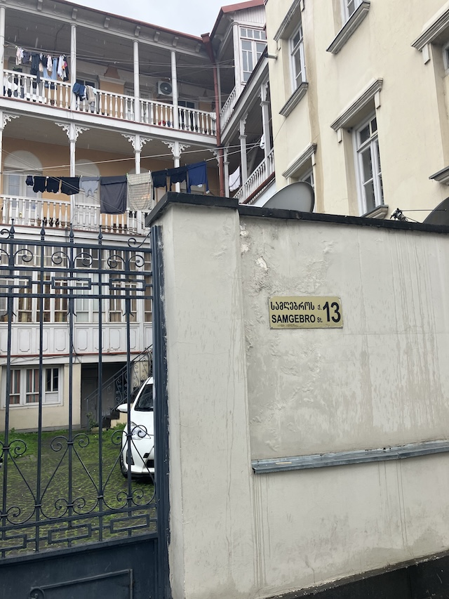
Del 04
04
“Solen och månen var halvsyskon, med varsin mor, och de tävlade om vem som skulle få lysa upp jorden på dagen. Solen steg upp i tid, fick dagen, gjorde sitt arbete och höll rytmen.
Månen däremot försov sig till framåt kvällen, kom och gick som den ville och gick inte att lita på.
Månens mor… fick nog. Hon slog till månen med sina degiga händer, en örfil som lämnade märken kvar på himlakroppen. Fläckarna på månen är spåren av det slaget.
Sen dess sköter solen dagen stabilt emedan månen fick natten – och rör sig oberäkneligt, ibland sen, ibland knappt synlig alls.”
Trafiken i Paris är trång och knölig, i synnerhet i cirkulationsplatser som t ex Place Charles de Gaulle. I Thailand ser det först ut som anarki när folk kör lite hur de vill, fort men med system och ingen ilska. Här är det aggressivt. Man tutar och slår i ratten, blockerar vägar, parkerar där man stannar. Min plan var hyrbil, och internationellt KK är med men det känns inte så aktuellt längre efter några taxiresor, vilka för övrigt är galet billiga även med lokala mått. 11kr en halvtimme genom stan. Lustig blandning också av mycket gamla bilar med för mig okända märken och Tesla samt stora Mercedes.
Vilar ömma ben. Men tog mig ett bad i svavel. Ett eget litet bad under en tegelkupol. Asvarmt och askallt. Luktar ju sådär men kan nog vara mysigt i ett stillsamt sällskap. akustiken är kul att sjunga i men vore fruktansvärd att vara flera pratsugna i. De har en sorts skrubb-massage jag tackade nej till. Det där med svavel jo det säljs som hälsosamt i lagom dos, bakteriedödande och bryter ner död hud. Min gissning är dock att värmen och avslappningen är de starkaste hälsoeffekterna.
Åter till lilla restaurangen vid torget, för det är rent och fint och servitrisen är rolig och lätt förvirrad men ärlig, “Nä ta inte det där, det är inte gott, ta den här istället”. Jag var varnad för de sträva vinerna men tycker de är lättsamma. Georgien är ett av de tidigaste kända länderna med vinproduktion och de har bevarat sina druvsorter som t ex Saperavi. Maten innehåller dock konsekvent koriander. Numera reagerar jag inte så mycket men det är ju som att spruta myggspray på maten.
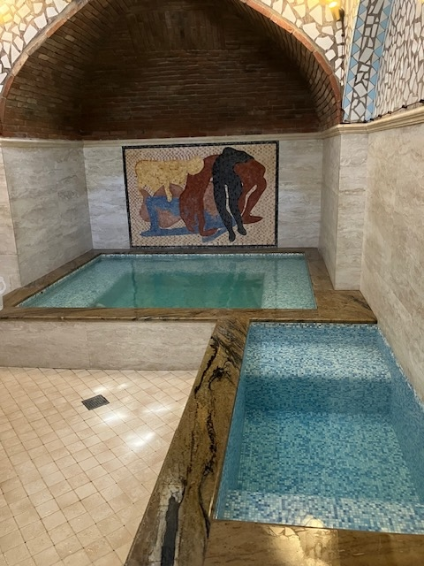
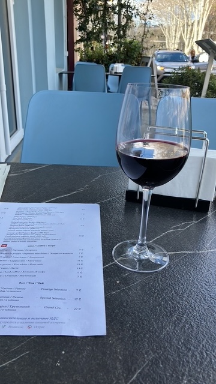
Del 05
05
Polisen blockerar vägen. Varför? Någon undrar om de har passet med sig. Tiden går, alla vill hem, trötta, hungriga. De sex bak i bilen drack vin till lunch och har ett litet party bak i bussen. Störande men, det kunde varit jag … för 40 år sedan.
Vi andra fem håller ihop lite, dansösen från London, fransosen och hans Bolivianska tjej och den jag tog rygg på, ekonomistudent från Kazakstan. Hon ropade när jag var försvunnen i nån ruin “Were’s my Swedish uncle?”, gulligt :)
Guiden från Abchazien är nationalist, åsikter om politik såklart och hävdar att europeer härstammar från Kaukasien, jag håller igen från att berätta om hur Blumenbach hittade på begreppet “Kaukasisk ras” på 1800-talet och det är hugget i luften och saknar stöd i DNA. Hon menar att Homo Erectus spreds härifrån också …nåja.
Chauffören är dödsföraktande, klart man kan köra om en rad lastbilar på en serpentinväg med ruttet räcke bara man har gasen i botten. 5 gånger dödligheten i trafiken jämfört med Sverige. Jag andas, sätter på säkerhetsbältet och önskar lite att jag kunde be om nåd. Går styrstag aldrig sönder på deras bilar?
Vägen går till Ryssland och vi åker så nära gränsen till ockuperade Sydossetien vi får. Lång kö av lastbilar och tankbilar, mest från Armenien. Med Ryssland norrut, Ukraina åt väster och Iran på andra sidan Azerbadjan undrar jag vad lastbilarna forslar, känns olustigt. Kolla röda linjen … många lastbilar är det.
Turistigt, exakta minuter vid stop. Kolla snabbt, selfisar och vidare. Höjdpunkten är köra snöskoter samt den otroliga utsikten från Gergeti Trinity Church i Kazbegi. Bergen är såå vackra, vi är nära Mount Kazbeg, 5000+ meter högt. perspektivet känns konstigt och det känns som jag kan räcka ut handen och nudda berget, toppen skymtar genom molnen.
Vi inser snart att det är enfiligt genom passen. Tunnlarna som, ifall jag fattat rätt, byggdes av Sovjet och tyska krigsfångar, rymmer inte mötande lastbilar, så trafiken turas om. Vi får vänta på vår tur en och en halv timme.
Väldigt drag i snöskotern, förköraren garvar och står på när han ser att jag hänger med :)
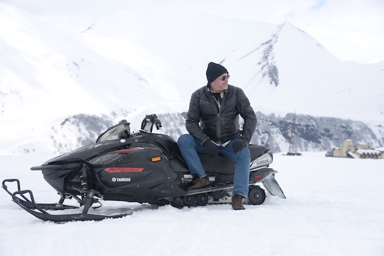
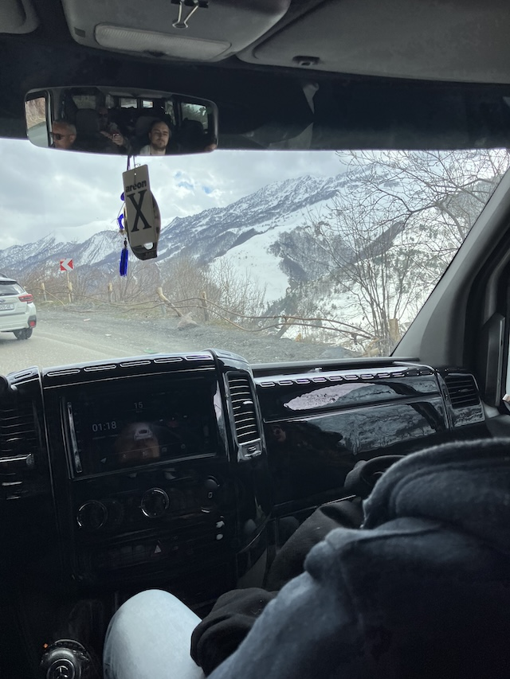
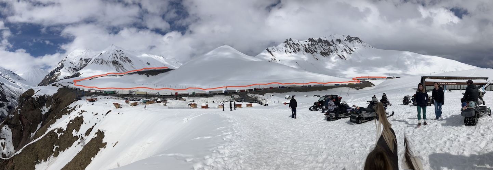
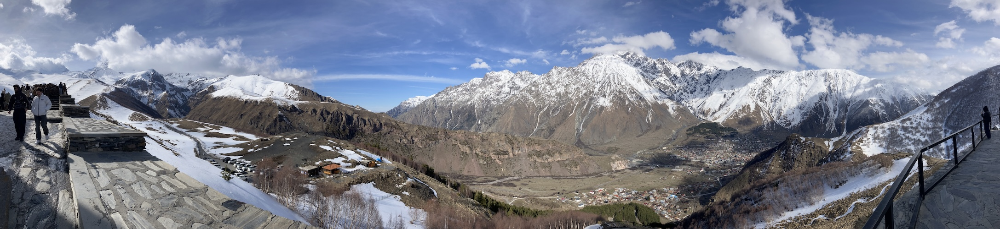